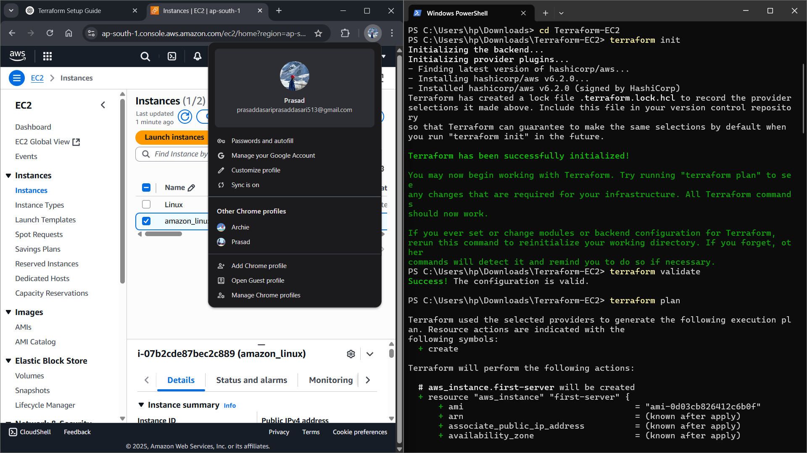
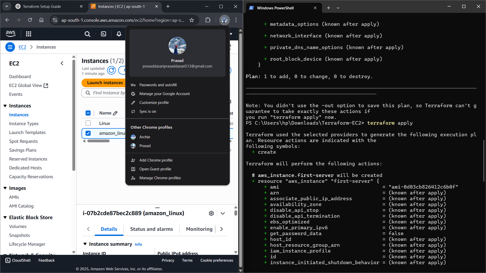
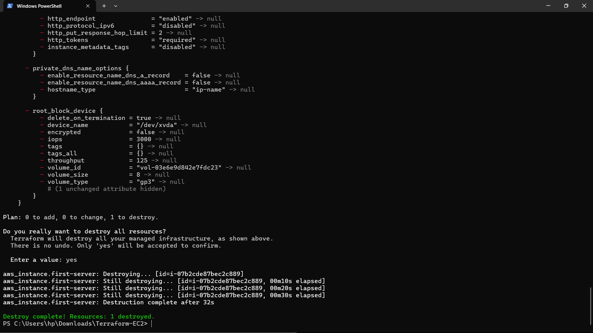

🎯 Project Overview
🎯What You'll Learn
This comprehensive tutorial covers everything you need to know about setting up Terraform and
launching your first EC2 instance on AWS. Perfect for beginners and those preparing for entry-level
cloud positions.
1Understanding Infrastructure as Code
Learn the fundamentals of Terraform and AWS EC2 services
2Setting Up Your Environment
Install Terraform, configure environment variables, and set up AWS credentials
3Writing Infrastructure Code
Create Terraform configuration files to define your AWS resources
4Deploying to AWS
Execute Terraform commands to provision your EC2 instance
📚 Key Definitions
🏗️Terraform
Terraform is an open-source Infrastructure as Code (IaC) tool created by HashiCorp.
It allows you to define and provision data center infrastructure using a declarative configuration
language called HCL (HashiCorp Configuration Language).
Key Features:
- 🔄 Declarative Configuration: Define what you want, not how to get there
- 📊 State Management: Tracks your infrastructure state
- 🔧 Provider Support: Works with AWS, Azure, GCP, and 1000+ providers
- 📋 Plan & Apply: Preview changes before applying them
- 🔁 Versioning: Infrastructure changes can be version controlled
☁️Amazon Web Services (AWS)
Amazon Web Services (AWS) is a comprehensive cloud computing platform provided by
Amazon. It offers over 200 fully featured services from data centers globally, including computing
power, storage, databases, networking, analytics, and more.
🖥️EC2 (Elastic Compute Cloud)
Amazon EC2 is a web service that provides secure, resizable compute capacity in the
cloud. It's designed to make web-scale cloud computing easier for developers.
Key Benefits:
- ⚡ Scalable: Scale up or down based on demand
- 💰 Cost-effective: Pay only for what you use
- 🛡️ Secure: Built-in security features
- 🌍 Global: Available in multiple regions worldwide
- 🔧 Flexible: Choose from various instance types
⚙️ Installation Guide
1Download Terraform from HashiCorp
Visit the official HashiCorp website to download Terraform
# Official Terraform Download Page
https://www.terraform.io/downloads.html
# For Windows (64-bit)
https://releases.hashicorp.com/terraform/1.5.0/terraform_1.5.0_windows_amd64.zip
# For macOS (Intel)
https://releases.hashicorp.com/terraform/1.5.0/terraform_1.5.0_darwin_amd64.zip
# For Linux (64-bit)
https://releases.hashicorp.com/terraform/1.5.0/terraform_1.5.0_linux_amd64.zip
2Install Terraform
Extract and install Terraform based on your operating system
# Step 1: Download Terraform
# Go to: https://developer.hashicorp.com/terraform/downloads
# Download the Windows AMD64 zip file
# Step 2: Extract the zip file
# Extract to a folder (e.g., C:\terraform)
# Step 3: Add to PATH Environment Variable
# 1. Press Windows + R, type sysdm.cpl, press Enter
# 2. Click "Environment Variables"
# 3. Under "System Variables", find and select "Path"
# 4. Click "Edit"
# 5. Click "New"
# 6. Add the path where you extracted Terraform (e.g., C:\terraform)
# 7. Click "OK" on all dialogs
# Step 4: Verify Installation
# Open Command Prompt or PowerShell and run:
terraform --version
# Download and extract
wget https://releases.hashicorp.com/terraform/1.5.0/terraform_1.5.0_linux_amd64.zip
unzip terraform_1.5.0_linux_amd64.zip
# Move to binary directory
sudo mv terraform /usr/local/bin/
# Verify installation
terraform --version
3Set Environment Variables
Configure necessary environment variables for Terraform and AWS
# Windows (Command Prompt)
set AWS_ACCESS_KEY_ID=your_access_key_here
set AWS_SECRET_ACCESS_KEY=your_secret_key_here
set AWS_DEFAULT_REGION=us-east-1
# Windows (PowerShell)
$env:AWS_ACCESS_KEY_ID="your_access_key_here"
$env:AWS_SECRET_ACCESS_KEY="your_secret_key_here"
$env:AWS_DEFAULT_REGION="us-east-1"
# Linux/macOS (Bash)
export AWS_ACCESS_KEY_ID="your_access_key_here"
export AWS_SECRET_ACCESS_KEY="your_secret_key_here"
export AWS_DEFAULT_REGION="us-east-1"
⚠️ Security Warning
Never hardcode your AWS credentials in your Terraform files. Always use environment variables, AWS
profiles, or IAM roles. Keep your credentials secure and never commit them to version control.
4Install AWS CLI (Optional but Recommended)
The AWS CLI helps manage your AWS services from the command line
# Windows
# Download from: https://aws.amazon.com/cli/
# Run the MSI installer
# macOS
brew install awscli
# Linux
curl "https://awscli.amazonaws.com/awscli-exe-linux-x86_64.zip" -o "awscliv2.zip"
unzip awscliv2.zip
sudo ./aws/install
# Configure AWS CLI
aws configure
💻 Terraform Configuration
1Create Project Directory
First, create a new directory for your Terraform project
# Create project directory
mkdir terraform-ec2-demo
cd terraform-ec2-demo
# Create main configuration file
touch main.tf
2Main Terraform Configuration (main.tf)
This is the primary configuration file that defines your AWS resources
🚨 CRITICAL SECURITY ALERT
NEVER hardcode AWS credentials in your Terraform files! Always use environment
variables or AWS profiles instead.
# Configure AWS provider
provider "aws" {
region = "ap-south-1"
# AWS credentials automatically picked up from environment variables
}
# Create EC2 instance
resource "aws_instance" "first-server" {
ami = "ami-0d03cb826412c6b0f" # Amazon Linux 2 AMI for ap-south-1
instance_type = "t2.micro"
tags = {
Name = "amazon_linux"
}
}
# Output instance details
output "instance_id" {
value = aws_instance.first-server.id
}
output "instance_public_ip" {
value = aws_instance.first-server.public_ip
}
3Variables Configuration (variables.tf)
Define variables to make your configuration more flexible
variable "aws_region" {
description = "AWS region"
type = string
default = "ap-south-1"
}
variable "ami_id" {
description = "AMI ID for EC2 instance"
type = string
default = "ami-0d03cb826412c6b0f"
}
variable "instance_type" {
description = "EC2 instance type"
type = string
default = "t2.micro"
}
🔧 Terraform Commands
1Initialize Terraform
Initialize your Terraform working directory
# Step 1: Initialize Terraform
terraform init
# Step 2: Validate configuration
terraform validate
# Step 3: Plan deployment (preview changes)
terraform plan
# Step 4: Apply configuration (create resources)
terraform apply
# Step 5: Destroy resources (cleanup)
terraform destroy
2Detailed Command Explanations
Understanding each command in detail
# Initialize Terraform
terraform init
# What it does:
# - Downloads required providers
# - Initializes backend
# - Creates .terraform directory
# - Prepares working directory
# Validate configuration
terraform validate
# What it does:
# - Checks syntax errors
# - Validates configuration files
# - Ensures proper resource definitions
# - Returns success/error messages
# Create execution plan
terraform plan
# What it shows:
# - Resources to be created (+)
# - Resources to be modified (~)
# - Resources to be destroyed (-)
# - No changes if infrastructure matches
# Apply changes
terraform apply
# What it does:
# - Creates/updates resources
# - Shows plan before applying
# - Asks for confirmation
# - Updates terraform.tfstate file
# Destroy all resources
terraform destroy
# What it does:
# - Removes all managed resources
# - Shows destruction plan
# - Asks for confirmation
# - Cleans up AWS resources
⚠️ Important Notes
- Always run
terraform plan before terraform apply
- Review the plan carefully before confirming
- Keep your state file secure and backed up
- Use version control for your Terraform files
📸 Screenshots & Verification
1 Init, Validate, and Plan
Screenshot showing successful execution of terraform init, validate, and
plan commands.

✅ Providers initialized, configuration validated, and execution plan displayed.
2 Apply
Screenshot showing the output of terraform apply, confirming resource creation.

✅ Resources created successfully with instance details shown in terminal.
3 Destroy
Screenshot showing the output of terraform destroy, confirming cleanup of resources.

✅ Resources destroyed successfully, EC2 instance no longer exists.